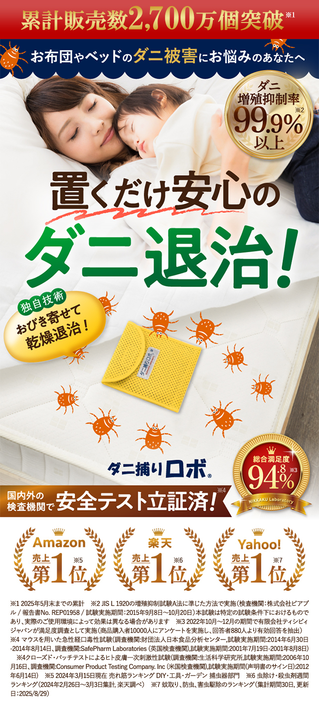
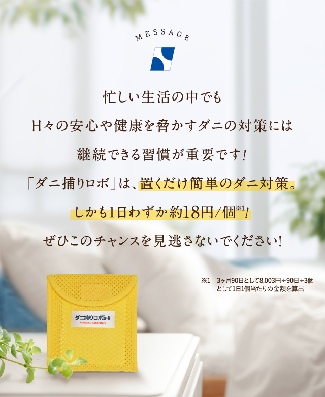

（レギュラー 1個）
設置場所：ベッド／寝具周り／ソファ／畳／屋内
通常
10%
+5%
15%

置くだけでダニを誘引・捕獲※。しっかり捕獲するダニ対策アイテム。
2001年発売のロングセラー。安全な誘引剤でダニをおびき寄せ、乾燥させて退治する独自の「乾燥式」。化学性殺虫成分を使わない安心設計で、お子さまやペットがいるご家庭にも。効果は約3ヶ月持続、置くだけで使えます。
粘着式や布団掃除機では捕りきれないダニに、おびき寄せて乾燥させる独自アプローチ。
レギュラーサイズの目安。設置場所の広さに合わせて個数を調整します。
ダニは目に見えないため“一発で分かる変化”は撮れません。次の4つで見せ場を作ります。
「ダニが集まる映像」の使い方：“効いてる証拠”として使用OK。冒頭で驚かせるより、話の途中で「ちゃんと集まってます」と見せるのがおすすめ（虫が苦手な人が離脱しにくい）。
※左下はショップボタン用に空ける ／ 1カット約2秒 ／ ナレーションありが◎
使用ルール
【重要】イメージキャラクター 辻希美さん（辻ちゃん）の画像使用・辻ちゃんを使った訴求は禁止です。
景表法・薬機法に配慮した表現でお願いします。
OKな言い方
×NGな言い方